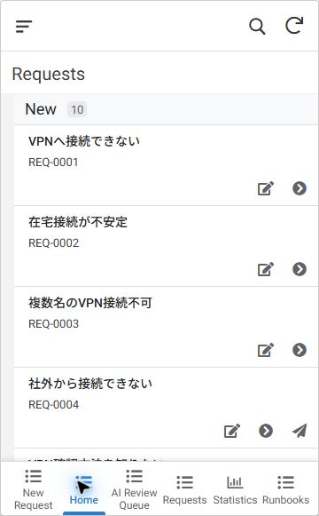
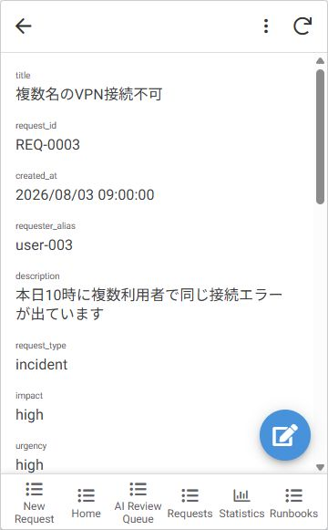
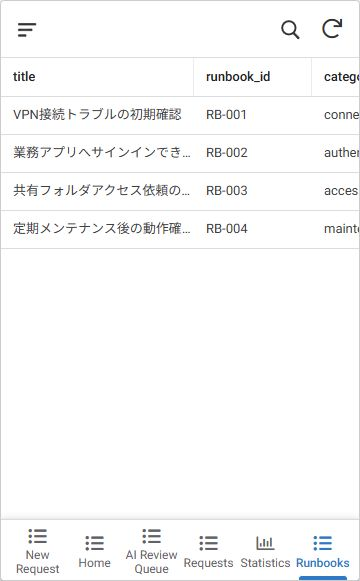
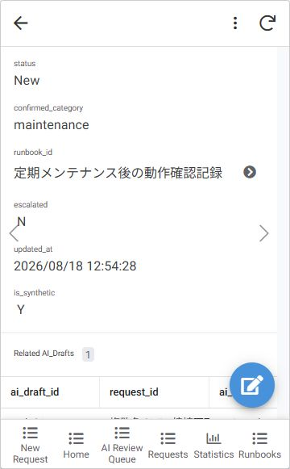
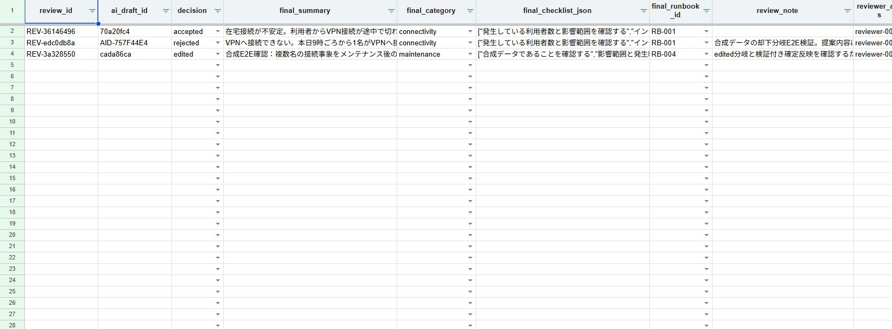
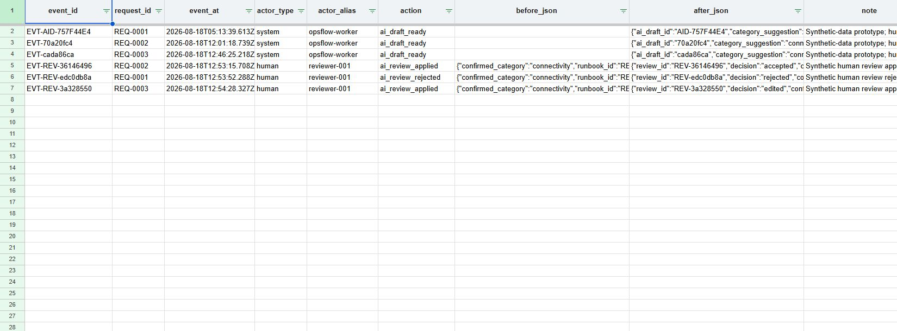

90-second portfolio demo
問い合わせ台帳と手順を、
小さく一つに。
AppSheet・Google Sheets・Apps Scriptで作った、小規模IT運用の自主制作MVPです。
自主制作架空事例合成データのみ
90-second portfolio demo
AppSheet・Google Sheets・Apps Scriptで作った、小規模IT運用の自主制作MVPです。
01 · request intake
種別・影響・緊急度・状態を、一覧と詳細で確認。メールや口頭だけに依存しない入口を作ります。
AIなしでも成立する基本台帳
02 · structured knowledge
状況を同じ項目で整理し、確認手順へ移動。依頼記録と手順書が分かれる状態を減らします。


03 · bounded AI draft
外部通信のないdeterministic mockで、要約・分類・確認項目・Runbook候補をDraftとして作成。Requestsの確定値はまだ変えません。
04 · human review
AI候補と人が確定した値を分離。修正例ではカテゴリとRunbookを変更し、判断を別レコードに残します。

05 · review evidence

06 · validation before apply
GASが次の条件を再検証し、却下時はRequestsを変更しません。
07 · idempotent event trail
再実行してもイベントは増えず、下書き準備と人の判断を操作履歴として追跡できます。

Verified portfolio evidence
公開コード・設計・テストは GitHub で確認できます。
本番・有償導入実績を示すものではありません。